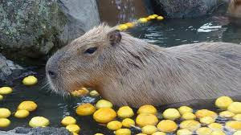

Nama:Erik Ferisman Sumampouw
Pembuatan step chart kustom untuk game ritme Step Mania (Personal Use). Proyek ini mencakup analisis beat dan sinkronisasi yang presisi terhadap lagu "Ga1had and Scientific Witchery". Proses "charting" ini memerlukan perhatian detail dalam penempatan not (anak panah) untuk memastikan flow sesuai dengan berbagai tingkat kesulitan.